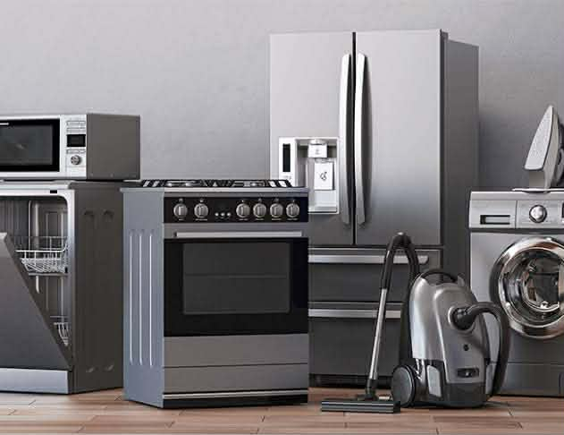

Servicio Técnico Quito
Servicio Técnico Quito
📞 +593 95 870 7904
Servicio Técnico Quito
Reparación de lavadoras, secadoras, refrigeradoras, calefones y cocinas de inducción a domicilio
📞 Llamar ahora 💬 WhatsApp
Reparación de lavadoras en Quito
Servicio profesional de reparación de lavadoras a domicilio con garantía.
Reparación de calefones en Quito
Reparación de calefones rápida y segura con técnicos especializados.
Reparación de secadoras en Quito
Servicio técnico de reparación de secadoras con diagnóstico preciso.
Reparación de cocinas de inducción en Quito
Reparación de cocinas de inducción con atención inmediata a domicilio.
Reparación de refrigeradoras en Quito
Servicio de reparación de refrigeradoras con garantía y repuestos.✔ Reparación inmediata
✔ Servicio a domicilio
✔ Garantía real en cada reparación
"Excelente servicio de reparación de lavadoras en Quito. Muy rápido y profesional."
- Carlos M."Mi calefón quedó como nuevo. Servicio de reparación garantizado y puntual."
- Andrea G."Reparación de refrigeradora rápida. Muy recomendado en Quito."
- Luis R.Atendemos en todo Quito y alrededores con servicio técnico rápido y profesional.